Basics
The Hunter's Road is the replacement for the Tower or Sky Corridor event. It is functionally a very fancy branching Huntathon that borrows elements from both Caravan and Tower.
The Road is always available with only various limited quantity rewards reset over time, this means you can do it whenever you feel like.
The event is taken from a new NPC replacing the Tower NPC. You cannot take items and you start in an area extremely similar to that of Guanzorumu. This area allows you to buy things with Gm and you can choose a progression path from a number of different quests:
In general most monsters are specced to end up around a normal G Rank monster regardless of their tiering before Zeniths, the exact multipliers are below up to floor 40 but a lot of monsters use non-standard rates for road variants meaning they are actually notably lower health wise.
Desirable Store Items
|
| 1~10 |
1.00x Attack |
1.00x Health |
| 11~20 |
1.50x Attack |
1.11x Health |
| 21~30 |
2.00x Attack |
1.25x Health |
| 30+ |
2.50x Attack |
1.33x Health |
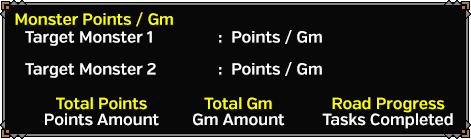
Choices have a fair amount of range to them, they can include pretty much any of the standard G Rank content (Normal G Monsters, GHC, Exotics, Zeniths, Burst, Origin), there is some logic involved and a few are fixed difficulty but mostly it's pure RNG. Each monster will have an associated amount of Gm and Hunt Points it gives for being slain, there are also bonus quests such as Shakalaka slaying which give less points but give Tower Medals and are potentially much easier than fighting the other choice presented allowing you to progress without using items.
After a branch has been chosen you will see a Target pop up showing you the name of the monster that will be the next target.
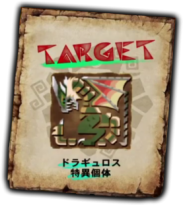
Gm Store
The Gm store is functionally identical to that of the one that was found in Tower. You spend Gm earned from killing things on the road or given to you upon departure on things such as Whetstones, Potions and utility items.
Hunt P Store
There are no carves on the Hunter's Road instead, after each run of the Hunter Road you will recieve a number of Hunt P based on what you hunted and how far you progressed down the road. These P can be spent on items from most monsters in the game, with extra items unlocking based on the number of consecutive steps you take on the road up to a maximum of 40 to unlock all monster items. The item requirements are never reset so as long as you have achieved them once you can freely purchase the items going forward.
The store can stock the vast majority of items currently in game including G Rank items and Zenith materials. However you will still need to be capable of progressing along the road far enough to unlock the items.
Some items on this store have weekly limits, this means you will need to repeat the requirements every week if you wish to get more of them (e.g. White Fatalis materials, Tower Weapon Zenith Sigil materials)
Because of the easy availability of HC and GHC carves it is very viable to use the road as an alternative to standard Hiden grind as you can simply buy HCs to Gook Cook and get Souls and Ribbons this way.
基本道具 / Consumables
採集素材 / Gatherables
素材(HR1~4) / Mats (HR1~4)
素材(HR5~7) / Mats (HR5~7)
G級素材(GR1以上) / G Rank Mats (GR1+)
裝飾品 / Decorations
其他道具 / Other
次數限制道具 / Time Limited Items
超特殊道具 / Super Special Items
In terms of points, the table below details some common pricing for items you will frequently want.
Desirable Store Items
|
| Tower Weapon Gems |
30 to 50p |
| Tower Equipment Mats |
300 to 500p |
| HR1-2 HC Carves |
500P |
| HR3-4 HC Carves |
1000P |
| HR5-7 HC Carves |
1500P |
| GHC Carves |
2000P |
| G3% Carves |
1000P |
| G1% Carves |
4000P |
| Origin Low% |
1500P |
| Common G Break Items |
50P |
Skills and Goals
The road is unique in that it rewards a long single play session while has finite consumables you purchase with points, this means you should not approach it in the same way you would a standard hunt as you cannot guarantee what items you will have available after the first step or what you will be fighting in advance. Certain stages always have fixed types of monsters, but not always the same types.
As you progress further into the Road the monster's attack multipliers will increase notably but their health pools will remain pretty much the same. This means you will need to play better at later stages as things that were not previously one shots may become them.
Things that apply to Road
|
| Every 10 Steps |
White Fatalis. |
| 12 Steps |
★1 Zenith |
| 14 Steps |
★2 Zenith |
| 16 Steps |
★3 Zenith |
| 18 Steps |
★4 Zenith. |
Beyond the above, nothing is truly fixed except that you will almost always get Zenith choices in pairs of the exact same tier (i.e. a choice of two ★2 Zeniths) unless you roll a Bonus Stage.
You will need to complete 50 stages to unlock everything on the road currently and there are a number of things that can help your general sustainability to enable this number of stages. The skills below are things that are good to have.
Things that apply to Road
|
| Transcend | Transcend is an incredibly large buff to multiple stats that you can enable roughly every 4 to 6 minutes depending on how much you have levelled it.
Maxed out transcend will last two minutes during which it will grant +800 Defense, +100 All Elemental Resistances, Super Armour, Movement Speed Up, 113% Raw Damage, 200% Elemental Damage (113% for ranged). This functionally will make you immune to all blights and enable you to survive almost any single hit if you have enough base defense. |
| Guild Cooking | Guild Cooking allows you to prepare a meal in the Guild Hall which will outright provide a skill without using a skill slot, utilising this will cause the food effects to persist until you leave the Road. |
| Diva Buff | The Diva Buff grants Divine Protection which can help with surviving against harder monsters in the Road. |
| Guild Pugis | As with any content the Guild Pugis will apply an extra minor skill if you feed them and make them happy. The best Guild Pugi for the road will generally be the fluffy sheep pugi, this halves stamina on actions such as evading. The watermelon status attack Pugi can also be useful should you be playing a status build. |
| Caravan Skills | There are a number of useful caravan skills with the most useful being Bonus Art (附贈技術) which causes you to retain any food buffs after you cart.Lesser skills that are useful include Recovery Items Up (醫療術) which gives 1.10x healing from Potions, Mega Potions and Lifepowders, KO Tech (ＫＯ術) which increases stun by a flat 1.10x as well as anything for general QoL such as Unstable Defender, Perfeect Defense or Weapon Art.I do not know if skills with trigger limits reset every monster but I would think they should. |
Good Skills to have
|
| Vampirism | Vampirism allows you to forgo healing to a large extent while also buffing your attack. This allows easy recovery from small errors and avoids any lesser monsters whittling down your health. |
| Vigorous | Vigorous grants 1.15x attack as long as you are above 100 Health, this is a huge boon while on the Road as it is notable attack boost and doesn't have any of the risk associated with even lesser monsters that using Adrenaline would have.
The Zenith Skill Vigorous Up adds +100 True Raw for Melee Weapons and +50 True Raw for Ranged Weapons. This is easily available on Zenith Midogaron's Waist, Tower Weapon Zenith Sigils or the Vigorous Up Cuff. |
| All Res Up | All Res Up is obvious in its benefits, you can gain +20 to every res with enough points or by utilising Guild Food. Combining this with a decent base set in terms of resistances (5 in each element), SR skills (+19 All Res) and the Road All Res Skill (+15) you can net an additional 49 resistance to every type, potentially making you completely immune to all Extreme Blights on the Road entirely. |
| Negate Hunger | It stops your stamina going down. You can use Guild Cooking to get this. |
| Divine Protection | It gives you a chance to take no damage. Using the Diva Buff will give you this. |
| Wide-Area +3 | Allows you to heal others without investing in Lifepowder. You can use Guild Cooking or a FP Exotic Piece to get this easily. |
| Encourage | It gives everyone evasion and stun immunity, having someone in your party with this skill can both allow people to get more DPS skills and save lives. If you get Encourage Up you will also give party wide Stamina Recovery Large and Peerless, greatly aiding in stamina management for everyone. |
Weapon Choice for Deep Grind
|
| Lance | Out of all weapons, Lance gives the best survivability on road. Guarding grants you infinite stamina, life powder effects and attack buffs and you can utilise Guard Up to simply chain guard even when being attacked from behind. This is a ridiculous blend of survivability and support meaning 4 lance players can make deep progress without too much risk.
It is possible for Tower Lances to utilise Guard Up or Reflect Up sigils while also granting Guard+2 or Reflect+3, they are less strong than a maxed Zenith Weapon but a Raw Lance will be within a few points of the raw value of a Zenith one easily. |
Any skills you have when you first start the road quest will persist for the entire duration, this means that although Guild Food and the Diva Song only last an hour and a half if you spend 8 hours on the Road without returning you will have both the skill you got from the Guild Food and the Diva Song effects for the entire duration.
Tower Medals
Tower Medals are found on the Hunter's Road, these are exclusively from Bonus Stages and are simply used in place of points for any items exclusively tied to the Tower Medal store. Bonus Stages always give 5 medals but have rather low spawn rates, even with the Road Skill that makes them spawn more often you will encounter around 5% bonus stages at most.
Bonus Stages are always obvious as they will have pink names rather than the standard white names and be worth a very small number of points.
Tower Medal Store
| Medals |
Name |
Function |
| 8 |
魂玉 |
20P Festival Gem |
| 16 |
上魂玉 |
40P Festival Gem |
| 30 |
重魂玉 |
80P Festival Gem |
| 8 |
祈禱勾玉【鳴】 |
200 Song Sphere Diva Defense Gem |
| 16 |
祈禱勾玉【奏】 |
500 Song Sphere Diva Defense Gem |
| 30 |
祈禱勾玉【響】 |
1200 Song Sphere Diva Defense Gem |
| 8 |
迎擊的紫團旗 |
Low Tier Interception Point Gem |
| 16 |
迎擊的橙團旗 |
Mid Tier Interception Point Gem |
| 30 |
迎擊的白團旗 |
Top Tier Interception Point Gem |
| 2 |
極征推薦状【白】 |
White Conquest Ticket (1 Level ) |
| 10 |
極征推薦状【紫】 |
Purple Conquest Ticket (5 Level ) |
| 20 |
暖暖的蜂蜜茶 |
Warm Honey Tea (+20 Diva affection) |
| 30 |
天籟的祈珠 |
Diva Performance Gem |
| 5 |
師傅貓最愛的東西 |
Randomised Weapon Grass (Gou) |
| 100 |
綽號命名券 |
Partner Rename Ticket |
| 100 |
堅毅力摺扇 |
Partner Personality Change Ticket |
| 10 |
銅之肉球手印 |
Partnyaa Decorations Lottery Item (Low Tier) |
| 25 |
銀之肉球手印 |
Partnyaa Decorations Lottery Item (Mid Tier) |
| 40 |
金之肉球手印 |
Partnyaa Decorations Lottery Item (High Tier) |
| 1 |
紋章用觸媒 |
Sigil Removal Solution |
| 500 |
天廊石用觸媒 |
Tower Decoration Removal Solution |
| 5 |
元氣之源 |
Halk Pot |
| 1 |
給公會的推薦信 |
HRP Ticket (4k) |
| 200 |
紫黑的原礦 |
Weapon Creation Material (Trash) |
| New gestures based around the actions the Legendary Rastas perform. |
| 150 |
模仿指南‧XXX |
Gesture animations. You can preview them by hiring a legendary (I series) or their idle animations (II Series). |
| 100 |
變幻糰子【X】 |
Halk food that instantly swaps their element. |
White Fatalis
White Fatalis is a potential target on the Hunter's Road and appears as an option every 10 floors. You will need to kill three White Fatalis in a week to unlock all his materials for purchase and spend 19800P to buy them all.
The fight itself is harder than a typical monster and around that of a Zenith. He has Ultra Roar, Ultra Quake and Ultra Wind Pressure and has attacks that one shot through any amount of health or survivability skills. The biggest one shot it does is chained from a roar with a pretty long start up, if you are too far away you are very likely to die but if you are next to Fatalis' legs you will avoid the one shot completely and cause him to self-stagger.
There is a finite limit on the number of materials you can claim each week from White Fatalis meaning it is impossible to finish everything he has in a single week. You can complete a single decoration or armour piece in a week.
White Fatalis' weapons all have the Emperor's Roar element which is a Hybrid Thunder (150%) and Dragon (50%) element.
Hunter's Road Skills
Like tower you can toggle and manage a number of special skills related to the Hunter's Road. These are things such as more revivals, more attack, more Gm and various other utility based skills. Like the previous Tower Skill system there are three aspects involved in these: Rank, Skill Points and Skill Cost.
Rank is very much obvious, if you are not at or above a required ranking you cannot use certain skills. Cost is functionally the amount of skills you can equip, each skill has its own Cost value and you have a total Cost that you can have allocated. Hunt SP is very similar to Cost but is simply used for allocating the skill.
For a practical example, the Lv5 Attack skill costs 35 Cost and 12 SP total to equip and needs you to be Hunt Rank 100. You can increase the total amount of Cost, SP and your Rank over time by simply playing the Hunter's Road and utilising special items.
If you had previously participated in the Tower Event your previous TRP, TR and TSP convert to Hunt RP, Hunt R, and Hunt SP enabling you to immediately select some skills.
Skill List
Physical Skills
| Skill |
LV |
COST |
Road SP |
Road Rank |
Description |
Attack
攻撃力
|
1 |
15 |
1 [1] |
1 |
Small increase to attack. (+10) |
| 2 |
25 |
1 [2] |
1 |
Increases attack. (+20) |
| 3 |
25 |
2 [4] |
1 |
Medium increase to attack. (+30) |
| 4 |
35 |
3 [7] |
50 |
Large increase to attack. (+50) |
| 5 |
35 |
5 [12] |
100 |
Very large increase to attack. (+70) |
defence
防御力
|
1 |
5 |
1 [1] |
1 |
defence +30 |
| 2 |
5 |
1 [2] |
1 |
defence +50 |
| 3 |
5 |
2 [4] |
1 |
defence +80 |
| 4 |
10 |
3 [7] |
50 |
defence +110 |
| 5 |
10 |
5 [12] |
100 |
defence +150 |
Health Recovery
回復力
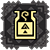 |
1 |
15 |
3 [3] |
1 |
Red Health recovery speed is increased. |
| 2 |
25 |
7 [10] |
25 |
Red health recovery speed is further increased. |
Fire Res
火耐性
|
1 |
15 |
1 [1] |
1 |
Fire Res +10 |
| 2 |
20 |
3 [4] |
20 |
Fire Res +15 |
| 3 |
30 |
5 [9] |
50 |
Fire Res +25 |
Water Res水耐性
|
1 |
15 |
1 [1] |
1 |
Water Res +10 |
| 2 |
20 |
3 [4] |
20 |
Water Res +15 |
| 3 |
30 |
5 [9] |
50 |
Water Res +25 |
Ice Res
氷耐性
 |
1 |
15 |
1 [1] |
1 |
Ice Res +10 |
| 2 |
20 |
3 [4] |
20 |
Ice Res +15 |
| 3 |
30 |
5 [9] |
50 |
Ice Res +25 |
Thunder Res
雷耐性
|
1 |
15 |
1 [1] |
1 |
Thunder Res +10 |
| 2 |
20 |
3 [4] |
20 |
Thunder Res +15 |
| 3 |
30 |
5 [9] |
50 |
Thunder Res +25 |
Dragon Res
龍耐性
|
1 |
15 |
1 [1] |
1 |
Dragon Res +10 |
| 2 |
20 |
3 [4] |
20 |
Dragon Res +15 |
| 3 |
30 |
5 [9] |
50 |
Dragon Res +25 |
All Res
全耐性
|
1 |
15 |
3 [3] |
20 |
All Res +5 |
| 2 |
20 |
5 [8] |
50 |
All Res +10 |
| 3 |
30 |
7 [15] |
100 |
All Res +15 |
Technical Skills
| Skill |
LV |
COST |
Road SP |
Road Rank |
Description |
Starting Gm Up
初期Ｇｍ増加
|
1 |
30 |
1 [1] |
1 |
Increases starting Gm. (+1000Gm) |
| 2 |
50 |
3 [4] |
50 |
Increases starting Gm significantly. (+3000Gm) |
Hunting Road Points Up
狩煉道Ｐ増加
|
1 |
10 |
1 [1] |
1 |
Increases Road Point earning slightly (+10%). |
| 2 |
15 |
2 [3] |
50 |
Increases Road Point earning (+20%). |
| 3 |
25 |
4 [7] |
100 |
Increases Road Point earning greatly (+40%). |
Bonus Stages Up
獎勵遭遇增加
|
1 |
10 |
3 [3] |
20 |
Increases the likelyhood of getting Bonus Stages slightly. Stacks with other players on road. |
| 2 |
20 |
5 [8] |
50 |
Increases the likelyhood of getting Bonus Stages. Stacks with other players on road. |
Resurrection Knowledge
復活的心得
|
1 |
60 |
10 [10] |
200 |
Increases the number of times you can faint on the road before failing (+1 Cart). |
Advancement Knowledge
進擊的心得
|
1 |
20 |
2 [2] |
20 |
Attack increases every 5 stages on the Road. Floor 6 will give +20 Attack while every 5th floor after will grant +10 Attack stopping after floor 26. Maximum buff of 60 Attack for all floors above 26. |
| 2 |
30 |
4 [6] |
50 |
Attack increases every 5 stages on the Road. Floor 6 will give +40 Attack while every 5th floor after will grant +10 Attack stopping after floor 26. Maximum buff of 80 Attack for all floors above 26. |
| 3 |
40 |
8 [14] |
100 |
Attack increases every 5 stages on the Road. Floor 6 will give +60 Attack while every 5th floor after will grant +10 Attack stopping after floor 26. Maximum buff of 100 Attack for all floors above 26. |
Last Stand
背水的心得
|
1 |
50 |
5 [5] |
50 |
Increases affinity by +30% and Attack by +80 but causes you to have a single faint on road regardless of other skills. |
| 2 |
70 |
7 [12] |
100 |
Increases affinity by +50% and Attack by +120 but causes you to have a single faint on road regardless of other skills. |
Duremudira Only Skills
| Skill |
LV |
COST |
Road SP |
Road Rank |
Description |
Care
回神術
|
1 |
0 |
2 [2] |
1 |
Slightly increases speed of revivals and the amount of health left after being revived. |
| 2 |
0 |
5 [7] |
50 |
Increases speed of revivals and the amount of health left after being revived. |
| 3 |
0 |
10 [17] |
100 |
Greatly increases speed of revivals and the amount of health left after being revived. |
Pharmacist
藥劑師
|
1 |
0 |
1 [1] |
1 |
Increases the number of revival items you can carry by 1. |
| 2 |
0 |
3 [4] |
20 |
Increases the number of revival items you can carry by 2. |
| 3 |
0 |
5 [9] |
50 |
Increases the number of revival items you can carry by 4. |
Virus Protection
耐壊毒
|
1 |
0 |
2 [2] |
10 |
Increases resistance to Deadly Poison slightly. |
| 2 |
0 |
5 [7] |
100 |
Increases resistance to Deadly Poison. |
| 3 |
0 |
10 [17] |
200 |
Increases resistance to Deadly Poison greatly. |
Frost Protection
耐絕凍
|
1 |
0 |
2 [2] |
100 |
Increases resistance to Powerful Frost slightly. |
| 2 |
0 |
5 [7] |
200 |
Increases resistance to Powerful Frost. |
| 3 |
0 |
10 [17] |
250 |
Increases resistance to Powerful Frost greatly. |
Gatekeeper Offensive
威脅的奮鬥
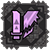 |
1 |
0 |
2 [2] |
10 |
Increases attack when facing Duremudira by +50 true raw. |
| 2 |
0 |
3 [5] |
10 |
Increases attack when facing Duremudira by +75 true raw. |
| 3 |
0 |
4 [9] |
10 |
Increases attack when facing Duremudira by +100 true raw. |
| 4 |
0 |
5 [14] |
100 |
Increases attack when facing Duremudira by +150 true raw. |
| 5 |
0 |
8 [22] |
200 |
Increases attack when facing Duremudira by +200 true raw. |
Gatekeeper Defensive
威脅的抵抗
|
1 |
0 |
2 [2] |
10 |
Increases defence when facing Duremudira. |
| 2 |
0 |
3 [5] |
10 |
Increases defence when facing Duremudira. |
| 3 |
0 |
4 [9] |
10 |
Increases defence when facing Duremudira. |
| 4 |
0 |
5 [14] |
100 |
Increases defence when facing Duremudira. |
| 5 |
0 |
8 [22] |
200 |
Increases defence when facing Duremudira. |
Tower Weapons
Basics
Tower Weapons are customisable weapons you design from the ground up based on a template weapon with incredibly low starting stats. Broadly speaking there are basically two different varieties of Tower Weapons; Light and Dark. Upgrades done to these weapons are (mostly) non-reversible
Light versions of weapons all come with two sigils slots and a single decoration slot while Dark versions come with a single sigil slot and two decoration slots.
Tower Sigils are used to grant Affinity, Status, Elemental, Zenith Skills or Weapon Abilities you can only have as many of these properties as you have Sigil slots and you cannot have two of the same type (i.e. two Elemental, Status or Affinity sigils does not stack.)
Tower Decorations outright grant skills, if you have a Tower Decoration for Expert+5 it instantly gives that skill when you slot it into a weapon and equip it. You can have up to two skills outright on a weapon. It is worth noting that it is very grindy to remove a decoration at all, you will need to buy a decoration removal item which costs 500 Tower Medals which is functionally 100 bonus stages on the Hunter's Road.
All Tower Weapons are actively available from the Road's Hunt Point store along with all the materials required to upgrade them.
Tower Weapon upgrades may not be undone, build one carefully in the Weapon Sim!
Tower Weapons can be crafted by talking to the Cat wearing a backpack in the blacksmith. They all have 2 Tower Sigil slots and 1 Tower Decoration slot.
Craft Weapon
Requires a special item that is rewarded for the completion of the first floor of the tower and can be found later randomly in Treasure Chests within the Sky Corridor.
Upgrade Weapon
Utilises the Gems found while in the Tower to upgrade the aspects of the Tower Weapons, gems used varies based on the Sigils inserted into the weapon.
Weapon upgrades will also require SR Weapon Souls, you get these for individual weapon types from fighting Hardcore SR1-31 (序), SR31-99 (中), SR100 (極) and Gou (天) monsters (e.g. 雙劍魂・天 comes from fighting an HC Gou monster with Dual Swords).
Change Type
Allows you to adjust the properties of Tower Hunting Horns, Bows, Bowguns and Gun Lances. Uses a Pulsating Liquid (脈動的液體).
Tower Decorations
Allows creation and slotting of Tower Decorations. Most decorations currently are only able to be found by fighting Duremudira, but a number of stronger G Rank versions of skills come from utilising 2nd District Duremudira's carves and a number of base decorations (e.g. Fencing+2, Sharp Sword+2 and Artisan decorations combine with Duremudira materials to make a Sword God+2 decoration). A full index of Tower Decorations can be found on the Google Document
Decorations may only be removed by using an item that costs 500 medals, you can however replace them directly at the cost of losing the originally slotted decoration
Tower Sigils
Allows production and insertion of Tower Sigils, these adjust things like the element, affinity and status of the weapon as well as things such as Bowgun Shots. Individual sigils are crafted using Ancient Gold Debris (太古之碎金). The value of the sigils can be adjusted by upgrading them in the standard upgrade menu. A full index of Tower Sigils can be found on the Google Document
Tower Weapon Simulator
A calculator for working out potential stats and cost can be found by clicking here if you are wanting to build a Switch Axe use the most recent JP one here instead.
Althought Zenith Sigils affect any skills granted (including Exotics, Hybrids and from Tower Decorations) they do not in fact convert the weapon into a Zenith weapon and as such will not grant the zenith part breaker effect despite granting a zenith skill.
Tower Armour
Tower Armours
A standard Armour that is crafted at low rank level and upgrades all the way to GX. Widely utilised in mixed endgame sets these are all made using items found in Treasure Chests at a low percent chance in the Tower or are given outright for clearing certain numbers of floors. They count as standard G Rank Armour upon being maxed for the sake of G Rank Skill Limits.
These Armours are crafted at the normal blacksmith and can be found in the Special Armour Production (生產特殊防具) under Event Armour (活動防具)
Tenrou Armours
Tenrou or Customisable Tower Armours are an Armour type that can be customised to act like the various other normal types of Armour in terms of buffs that are granted, they are exclusively upgraded and crafted using items from the Tower and can be gemmed with special gems to grant the aforemention buffs. The armour must be of a relevant upgrade tier to the Armour type you want it to act like, so if you wanted it to act as an Origin or G Rank piece you would need the piece at G level.
The armour will glow based upon the Special Decorations that you slot within it, if two slots are taken up by any single colour that will be the glow type while if there are only 1 of each type the glow will be white.
|
Muscle Boost / 技能UP之印
3 Slots Required
Adds the Skill Boost effect from Gou and higher armours with only 1 piece needed.
Uses: 太古之希石【橙】 (Ancient Hope Stone [Orange])
|
|
Sharpness Level UP / 銳利度UP之印
3 Slots Required
Increases the level of sharpness when equipped with any Gou derived weapons when on Gou, Supremacy or G Rank quests.
Uses: 太古之希石【青】 (Ancient Hope Stone [Blue])
|
|
Attack Up / 攻擊力UP之印
1 Slot Required
Increases Raw when equipped with any Gou derived weapons when on Gou, Supremacy or G Rank quests. Functions as an Origin piece for buff values (+20/40/60/80/110).
Uses: 太古之希石【赤】 (Ancient Hope Stone [Red])
|
|
Elemental and Status Up / 屬性・狀態UP之印
1 Slot Required
Increases Raw when equipped with any Gou derived weapons when on Gou, Supremacy or G Rank quests. Functions as an Origin piece for buff values (+3%/6%/9%/12%/15%).
Uses: 太古之希石【赤】 (Ancient Hope Stone [Red])
|
|
Critical Range Multiplier Up / 距離補正之印
2 Slots Required
Increases the critical range multiplier within critical distance with any ranged weapon when on Gou, Supremacy or G Rank quests.
Uses: 太古之希石【赤】 (Ancient Hope Stone [Red])
Typically an additional 0.3x mutliplier (e.g. 1.6x becomes 1.9x)
|
|
Power Coating Up / 強擊瓶UP之印
1 Slot Required
Increases the multiplier on power coatings with any bow when on Gou, Supremacy or G Rank quests by 0.1x (e.g. 1.5x to 1.6x).
Uses: 太古之希石【赤】 (Ancient Hope Stone [Red])
|
|
HS Defense Up / 防禦力UP之印
1 Slot Required
Adds the HS Armour Defense Up buff when on HC or GHC quests with any Gou derived weapons or Hardcore weapons +20/40/60/80/100)
Uses: 太古之希石【黃】 (Ancient Hope Stone [Yellow])
|
|
HS Damage Reduction / 傷害減輕之印
1 Slot Required
Adds the HS Damage Reduction buff when on HC or GHC quests with any Gou derived weapons or Hardcore weapons (10%/17%/24%/27%/30%)
Uses: 太古之希石【黃】 (Ancient Hope Stone [Yellow])
|
|
HC Health Regen / 體力自動回復之印
1 Slot Required
Adds the HC Health Regen buff when on HC or GHC quests time to regen 1HP is the same as with normal HC or higher parts (8s/4s/2s/1.5s/1s)
Uses: 太古之希石【黃】 (Ancient Hope Stone [Yellow])
|
|
G Rank Armour / G級防具之印
2 Slots Required
Causes the Armour Piece to act as a G Rank armour, allowing higher skill totals and buffing damage when there are 3 or 5 pieces total.
Uses: 太古之希石【紫】 (Ancient Hope Stone [Purple])
|
The Armour is crafted at the same NPC as a Tower Weapon, in the obvious Armour section. These armours cannot take Zenith Sigils and are overall relatively poor.
Duremudira
Urgent Quests
As you progress along the road you have a chance to trigger a Duremudira quest. Both first and second district Duremudiras are available at any point. Like most urgents they are posted individually, this means if you are with a party of four Hunters you will likely get four Duremudiras to do at one time.
The Urgent Quest takes place in a repurposed tower with only the single floor for Duremudira. You can buy items with Gm the same as on the road from the cat and will spawn with more Gm in the second district. Unlike White Fatalis and the road you can simply idle in the main hall if you don't want to fight the monster.
Attempting to fight Duremudira with anything less than a proper G Rank Hiden Set is almost impossible - especially solo - this means you should utilise any Duremudiras you get before you are fully geared as a means to learn the fight.
Fighting Duremudira
When actually fighting Duremudira you will be given 20 minutes from the time the first person enters its arena. Instead of carts you will simply lose 60 seconds every time a hunter is completely defeated, this can be avoided by using either Revival Balls (回神球) which you can throw at a Hunter to instantly revive them or Revival Drugs (回神藥) which require you to stand over a the downed hunter resuscitating them. NPCs can also revive you a number of times but are rather inconsistent and can cause issues with some of Duremudira's attacks as they do not know how to avoid them.
By default you can carry 2 of each of these, this can be increased by levelling the Pharmacist Hunter's Road Skill (see above).
Duremudira inflicts two statuses, Deadly Poison and Freezing. Deadly Poison can be cured with its specific Deadly Poison Cure (特效藥) item sold at the cat store. Deadly poison massively reduces defense and does incredibly high damage over time. Freezing is only done by second district Duremudira and is very much literal. There are Road Skills that mitigate the effects of these debuffs but you cannot become immune to them, Vampirism with resistance can potentially be enough to leech through the degen for some weapons.
First District Duremudira has no associated equipment or items and instead will give a pool of tower items including decorations and weapon materials. You gain a title on your first and fiftieth slays.
There are two phases to this fight, the first phase is around 33% HP while the second phase is around 66%.
Second District Duremudira has two low% carves (Red and Black Fluids) that are used for making G Rank Tower Gems and Sigils. This Duremudira also gains a third phase that occurs after he initially collapses as if dead. You get a larger pool of tower items as a reward than first district and you will also gain titles on your first and fiftieth slays.
In terms of HP Second District Duremudira has around 20% of its HP for the first phase, 40% for the second and 40% for the third.
Hitboxes and Weaknesses
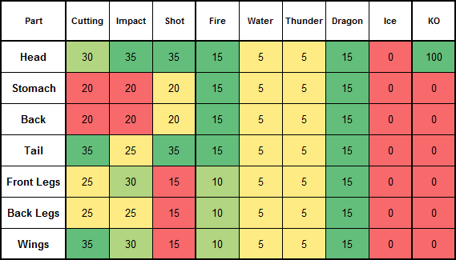
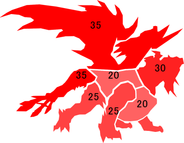
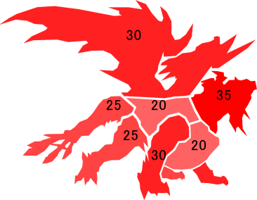
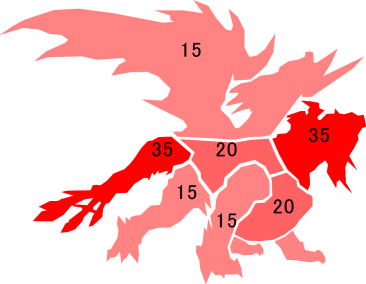
Hiden Alternative
Because you can buy HCs and GHCs from the road store you can directly use the Road as an alternative to actual Hiden grind. In terms of timescale, this is probably strictly worse than actually grinding on Premium but it is also something you can work on passively for extra decorations.
Hiden Decorations (1x, 5x)
|
| Low Souls | 8,500 Points
42,500 Points |
| Mid Souls | 39,000 Points
195,000 Points |
| High Souls | 82,500 Points
412,500 Points |
| Top Souls | 25,500 Points
127,500 Points |
| Souls Completion | 155,500 Points
777,500 Points |
| Low Ribbons | 68,000 Points
334,000 Points |
| Mid Ribbons | 110,000 Points
550,000 Points |
| High Ribbons | 110,000 Points
550,000 Points |
| Ribbons Completion | 288,000 Points
1,434,000 Points |
| Full Completion | 443,500 Points
2,211,500 Points |
Carves for armour upgrades (1x, 5x)
|
| G1%s, GHCs, HCs | 48,000 Points
240,000 Points |
In terms of actual items to buy, not all HCs and GHCs are equal. Below are some examples that give the most Souls (x5) and Ribbons (x3) back, going for anything below these cookable totals is frankly nothing more than a huge waste of time and effort.
Hunter Rank Souls
|
| 鋼龍的荒殼 | Daora Desolation Shell | Low Souls x5 |
| 霸龍的極鱗 | Akantor Extreme Scale | Mid Souls x5 |
| 霸龍的壞爪 | Akantor Corruption Claw | High Souls x5 |
| 冰狐龍的冰殼 | Dyura Ice Shell | Top Souls x5 |
G Rank Ribbons
|
| 一角龍的豪殼 | Monoblos Brave Shell | Low Ribbons x3 |
| 變質柔皮 | Malleable Hide (Red Khezu) | Mid Ribbons x3 |
| 冥雷龍的滅鉤爪 | Dora Perish Claw | High Ribbons x3 |
Obviously this is not the most swift method of grind but hitting 50 floors will grant you around 100,000 Points so doing this around four to fives times will allow you to finish a single decoration.
Raviente Materials
This is future content but points can be amassed in advance!
In the Fourth Content Update for Z2 they added Berserk Raviente materials to the point store. These materials all have weekly limits which means that every decoration will take at least four weeks from this source. In terms of actual time investment, the grind is pretty similar to the time investment needed for the original decorations but it is notable in that the decorations can be ground out either solo or simply with smaller groups without involving native speakers.
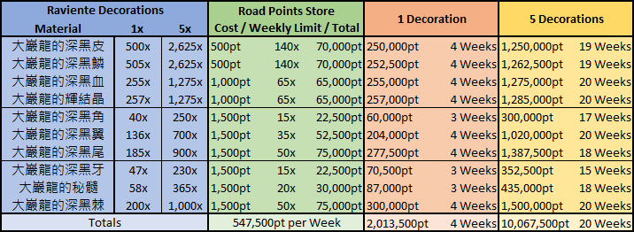
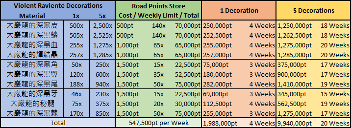
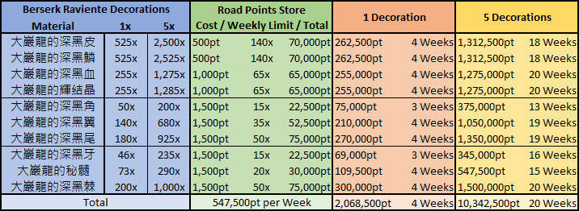
As the above table shows, you will want to be able to grind out 547,500 points in a week and you will take 20 weeks to get Determination if you want to go this route for decorations. While this is likely intended as mainly a complement to actual Ravientes it is certainly viable for players unable or unwilling to get on Raviente trains for decorations from that source.